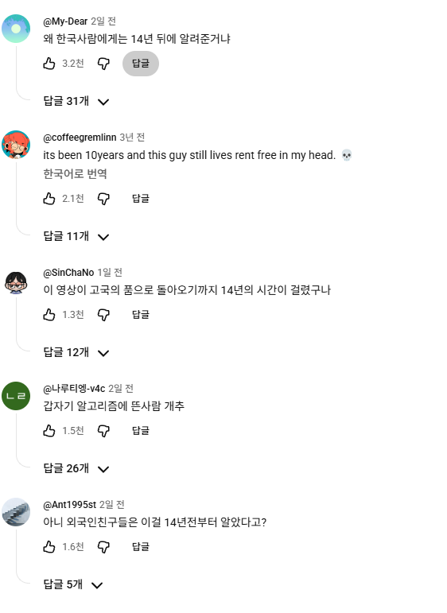

외국인들 알고리즘에서 돌다가 14년만에 귀향함...

외국인들 알고리즘에서 돌다가 14년만에 귀향함...
춤은 또 노래랑 딱 맞는걸 합성해놨네 ㅋㅋㅋㅋㅋ
커 커커커 커닝시티
뭐하나 했는데 춤 들어가는 거 ㅅㅂ 개웃기네 진짜 ㅋㅋㅋㅋㅋㅋㅋㅋㅋㅋㅋㅋㅋㅋㅋㅋㅋㅋㅋㅋㅋㅋㅋㅋㅋㅋㅋ
잘추네
존나 잘 추네ㄷㄷ
이거 집배경이 산쉔보 비슷하네
산쉔보가 뭐야??
그 샨션뿌라고 중국무술 따라하면서
와이프가 잡도리하는거 피하는 영상 있음
ㅇㅎㅋㅋㅋㅋㅋㅋㅋ산쉔보 이제 알겠다 고마워
나도 어제 아침에 저게 알고리즘에 뜨던데 뭐임ㅋㅋㅋㅋ
메디세이 스토리네
이색기 머임 신창섭임?ㅋㅋ
진짜 노래 후반부 내 마음을 울린다
글클메 해본다고 maple이라고 영어로 치는애들 많아져서 그런듯